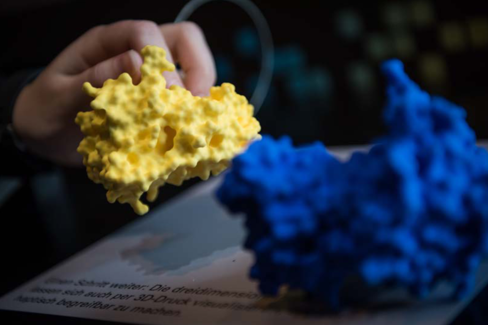

From Visualization Research to Public Presentation - Design and Realization of a Scientific Exhibition


Venue. SIGRAD (2017)
Abstract. In this paper, we present the design considerations of a scientific exhibition we recently realized. The exhibition presented the work of two large research projects related to computer simulations, which include scientific visualization as an essential part of the involved research. Consequently, visualization was also of central importance for our exhibition. It was not only used to illustrate the complex simulation data to convey information about the results from the application domains, but we also wanted to teach visitors about visualization itself. Therefore, explaining the purpose and the challenges of visualization research was a significant part of the exhibition. We describe how we developed an engaging experience of a highly theoretic topic using the same visualization tools we developed for the application scientists and how we integrated the venue into our design. Finally, we discuss our insights from the project as well as visitor feedback.
Link to this page: